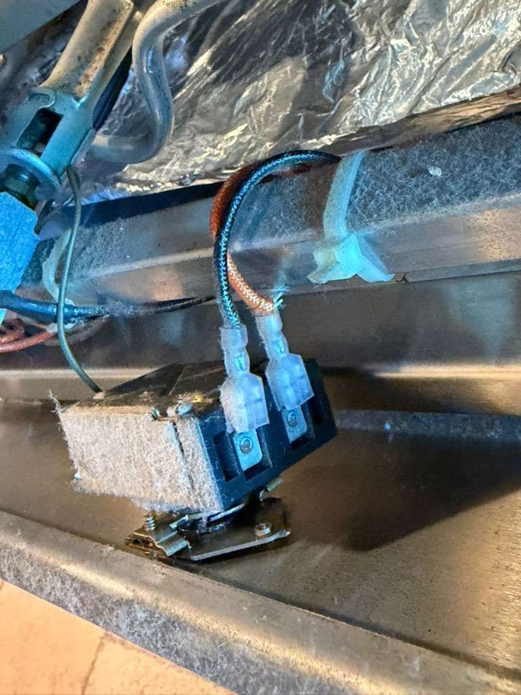

Viking · Professional Range · Mission Viejo, CA
Sub-Zero, Miele, Wolf, Viking, Thermador, Dacor, DCS, and Bosch premium lines, in ocean-block condominiums and Sunset Park bungalows alike. Premium brands only here. Our Los Angeles technician can often be out the same day.
5.0 · 160 Google reviewsMon–Sat, 8am–7pm. Two-hour arrival window. The technician calls before arriving.
See neighborhoods and ZIP codes
Family-owned since 2017 · Licensed, bonded & insured
Viking, Wolf and Dacor jobs from our own service calls. These are our photos, each labeled with the city where it was actually taken. Santa Monica is a newer market for us, so you will see local jobs appear here as we complete them.

Viking · Professional Range · Mission Viejo, CA

Wolf · Range and Cooktop · Newport Beach, CA

Dacor · Professional Range · Pico Rivera, CA
Eight brands, and that is the whole list for Santa Monica: Sub-Zero, Viking, Wolf, Miele, Thermador, Dacor, DCS, and Bosch premium built-in lines. Choose a brand below for the failures we see most, the parts involved, and how the repair usually goes.
Santa Monica is premium-brand only. Any of these eight gets the flat $99 diagnostic, credited toward the repair, and same-day is often open. Bosch is the one that needs a model number: we take the premium built-in lines, Benchmark included, so read us the number off the door frame and we'll confirm it in a minute. A Whirlpool, LG or Samsung is a no from us, and you'll hear that on the phone rather than after a technician has parked.
Independent repair service. Not affiliated with or endorsed by these manufacturers; brand names and logos are trademarks of their owners.
No factory authorization is claimed here; we service these brands independently. Still inside the manufacturer's warranty? Call the brand first, because authorized warranty work should not cost you anything.
The equipment we actually get called out for in Santa Monica kitchens. Each link opens the brands covered, the faults behind those calls, and what the repair typically costs.
Every Santa Monica appointment carries the same flat $99 diagnostic we charge in Orange County and everywhere else in Los Angeles County, credited toward your repair if you go ahead. The ocean does not change it and neither does the badge on the door. Most premium-brand repairs land between $250 and $900. Thermador and Wolf igniter or burner work usually runs $200 to $600, while sealed-system refrigeration work on a Sub-Zero built-in runs $1,200 to $2,500. Seniors 60+ and repeat customers get 20% off labor.
Estimates vary by brand, part availability, and diagnosis. Final quote is provided before repair. Full pricing guide
Five ZIP codes carry residential delivery here: 90401, 90402, 90403, 90404, and 90405. One thing to settle before you book, though. Parts of 90402 lie outside the city, including Santa Monica Canyon and Rustic Canyon, which use Santa Monica mailing addresses but sit in the City of Los Angeles. Venice, Brentwood, Mar Vista and Pacific Palisades are neighbors, not neighborhoods, and this page does not cover them. The eight below follow the city's own Land Use and Circulation Element, and what changes between them is usually the building rather than the brand. See every city we serve →
Large single-family lots · 7,500 sq ft and up. Wide lots north of Montana Avenue, plus a band of 1930s to 1950s garden courtyard apartments along San Vicente Boulevard and taller buildings facing Ocean Avenue. Full-size built-in refrigeration and professional ranges in the houses, and 24-inch and compact formats in the courtyard units.
The city's largest multi-family neighborhood. Bungalow courts, 1920s and 1930s apartment hotels, and luxury condominiums on Ocean Avenue looking out over Palisades Park. The densest concentration of elevator-served towers in Santa Monica, so a visit here usually begins at a front desk rather than a driveway.
The newest and most vertical part of the city. The blocks around the Third Street Promenade and the Pier, where the City's 2010 land use plan found most of the decade's new mixed-use buildings had gone. Subterranean garages, integrated and panel-ready appliances behind cabinet fronts, and the newest kitchens on this list. Also the part of town least likely to be rent controlled.
Mid-century apartments, bungalows and duplexes. Well-kept mid-twentieth-century apartment buildings mixed with California bungalows and duplexes. Footprints are modest and most kitchens have been remodeled at least once, which is how a full-size professional range ends up in an opening that was cut for something smaller.
Low-scale multi-family with interior courtyards. Low-rise multi-family and older single-family homes built around interior courtyards, and the highest concentration of long-tenured rent-controlled tenancies anywhere in the city. Long tenancies mean long-lived appliances, so this is where we most often price a repair against a replacement that would drag cabinetry along with it.
Douglas Aircraft-era single-family, alley garages. Single-family blocks from the 1930s and 40s built for Douglas Aircraft workers: deep front setbacks, detached garages off the rear alleys, compact original kitchens. Whether a built-in can come out at all is a doorway question here before it is a parts question.
One of the oldest neighborhoods · Third Street Historic District. Craftsman, Mediterranean and Modernist houses on narrow lots, taking in the Third Street Neighborhood Historic District and Main Street. Rear access is alley-only on many blocks, and these are the homes closest to the water, which is where corroded hinge and fastener hardware turns up most.
Mostly single-family · multi-family along Wilshire. The quiet single-family corner of the city, with a small run of apartment buildings along Wilshire Boulevard. Driveway access and the easiest parking on this list, which usually means we can hold a tighter arrival window.
Salt does not attack an appliance the way people picture it. The process is slow, it starts on the outside, and it concentrates in the places a cloth never reaches.
Start with what the metal actually is. Sub-Zero publishes that most Sub-Zero, Wolf and Cove products are built from 304 or 201 stainless with a #4 brushed finish, uncoated and not fingerprint-free. Neither alloy contains molybdenum, which is the element that makes 316 a marine grade, so nothing in a premium built-in kitchen is a marine alloy no matter what it cost. Sub-Zero puts it bluntly: for units exposed to salt water, especially in coastal or tropical areas, rust on parts over time may not be preventable. The company also says stainless is not stain-proof, naming low oxygen, high salinity and poor circulation as the conditions that beat it. The city's entire western edge is Pacific shoreline, and 90401, 90402 and 90403 all front the coast, extending from the beach to between one and two and a half miles inland, so that is the environment these appliances live in.
The mechanism itself is unglamorous. Chloride-bearing droplets land on a door, the water evaporates, and the salt left behind pulls moisture back out of the air, forming a thin electrolytic film that destabilizes the passive oxide layer stainless relies on. What shows up first is tea staining, a light brown discoloration that is a cosmetic problem before it is anything else. Neglected for years it can progress to pitting that does matter, but a stained door panel is not a failing appliance and nobody should be selling you a replacement over one. What you clean it with matters more than the marks do. Thermador and Bosch tell owners not to use cleaners that are abrasive or contain chlorine, since both are corrosive to stainless steel, and Sub-Zero says never to put bleach on its stainless. Scrubbing salt spots with a chlorinated cleaner is adding chloride to a chloride problem.
Where salt does real damage is the hardware. Tight, oxygen-starved joints hold chlorides against the metal and turn acidic, and that is where corrosion stops being cosmetic: fastener heads, hinge assemblies, handle standoffs, door seams. A premium built-in has far more of those joints than a freestanding unit, because it is assembled from panels, trim and mounting brackets rather than pressed from one shell. Wolf makes the same point from the other side in its grill-module cleaning guidance, noting that salt and some cooking liquids may pit and stain the surface and that spatters should come off immediately. A rusted hinge bracket is a repair. A discolored door is a cleaning. Telling you which one you have is most of what the first visit is for.
Condensation gets blamed on salt far too often, and it is a separate story with a separate cause. Santa Monica sits in the coastal marine layer, and plenty of the older housing here has no air conditioning, so indoor humidity runs high through a gray morning. Sub-Zero's own position is that some sweating may occur on a Sub-Zero product in hot or humid climates, especially in non-air-conditioned homes, but that there should be no dripping. That line is the whole test, and it is a good one. A film of moisture on a door is the weather. Water running down and pooling is a seal, a gasket or a defrost fault, and it is worth a call.
Signs worth a call:
Two thirds of the homes here sit in buildings of five units or more, and only about one in five is a detached house. That reorders the job: access first, appliance second.
The numbers set the scene. Per the City's 2021-2029 Housing Element, of roughly 52,600 homes in Santa Monica, about two thirds are in buildings of five units or more, and roughly three quarters of the stock predates 1980, with the City's own reading that almost 85% of it is more than thirty years old. Per the 2020-2024 American Community Survey (U.S. Census Bureau), 72.1% of households rent. Rent control covered 27,668 units at the end of 2024 and generally exempts anything built after April 10, 1979, which puts more than half of all homes, and roughly two thirds of the multi-unit housing, inside pre-1979 buildings. Behind that sit older cabinet cutouts, older 30-inch openings and older wiring. The unit mix is small as well: 10% studios, 33% one-bedroom, 36% two-bedroom. Compact and 24-inch appliances are the norm in this city, not the exception, and we book with that assumption already made.
Then there is reaching the kitchen at all. The residential grid was laid out around its alleys, and in Ocean Park, Sunset Park and much of Wilshire-Montana the garage faces a narrow rear alley rather than the street. Downtown and the mixed-use corridors send parking underground instead, so the approach is a ramp, a gate and a garage level. Neither is difficult when we know in advance. Both go badly when a technician turns up with a hand truck to move a built-in refrigerator and finds the only way in is a service corridor nobody mentioned.
Building rules are private association rules rather than city rules, and they differ from address to address. Many buildings want a certificate of insurance from a vendor before admitting them, many require the service elevator to be reserved, and many set their own hours for work inside units. We are licensed, bonded and insured, and we will send paperwork ahead if your association asks for it, as long as you tell us at booking. Separately, the city's noise ordinance limits building construction and repair work to 8am to 6pm on weekdays and 9am to 5pm on Saturday, with none on Sunday or listed holidays. Whether an in-home appliance repair falls inside that is genuinely unsettled, so we schedule within those hours as a matter of course rather than test it. The county-level page covers the same premium service in the other Los Angeles cities we take: luxury appliance repair in Los Angeles.
Universal Appliances Repair Group Inc. provides luxury appliance repair in Santa Monica, California, for premium brands only, covering built-in and professional appliances: built-in refrigeration, professional ranges, wall ovens, cooktops, panel-ready dishwashers, wine storage, and freezers, including compact and 24-inch formats. We cover ZIP codes 90401, 90402, 90403, 90404, and 90405, including North of Montana, Wilshire-Montana, Downtown, Mid-City, Pico, Sunset Park, Ocean Park, and the Northeast.
Our Los Angeles technician offers same-day service when that schedule is open. We also serve nearby Los Angeles, Beverly Hills, and Manhattan Beach. Call (949) 629-5365 or book online.
Still have a question? Call (949) 629-5365.
Sub-Zero, Miele, Wolf, Viking, Thermador, Dacor, DCS, and Bosch premium lines, from Ocean Park up to North of Montana. Same-day when our Los Angeles technician has an opening. 90-day parts / 30-day labor warranty on every job.